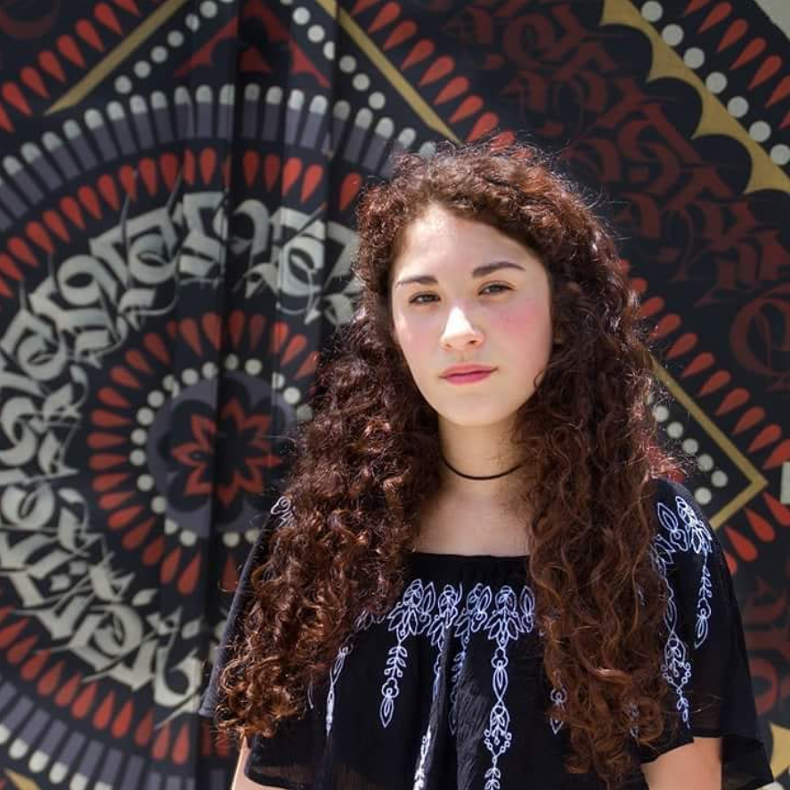

|  |
Estudiante en Toulouse Lautrec. Aplicada, responsable, creativa, con facilidad de adaptación y capacidad de trabajar en equipo. Con iniciativa para resolver problemas eficientemente. |
 |
Tradicionalmente, los arquitectos presentaban un modelo de cómo sería la construcción. El problema con esto es que todo se hizo manualmente, por lo que puede llevar mucho tiempo.
Ahora, gracias a la impresión 3D, las maquetas que solían tardar semanas en crearse ahora se pueden exportar en horas directamente desde el software de diseño.
Cambiar o actualizar cualquier parte del diseño se puede hacer muy fácilmente y dentro del plazo del cliente. Esto solía ser un problema cuando se trabajaba con maquetas tradicionales.
|
 |
Con mi Equipo, pusimos un rollo de canela que representa lo dulce y adorable que somos como personas. Por otro lado la escuadra transmite un poco de nuestra carrera que estudiamos, que es: Arquitectura de Interiores. Quisimos complementarlos y de producto obtuvimos ese dibujo. |